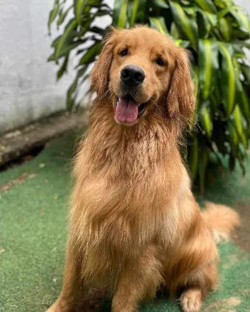
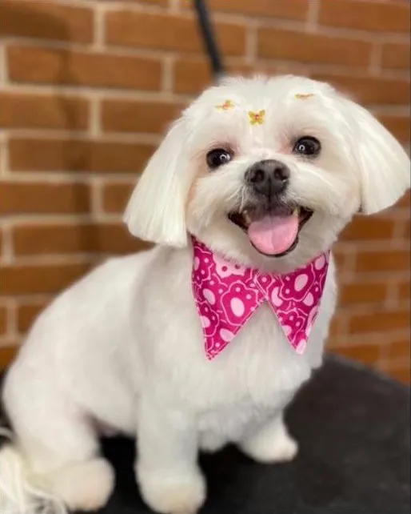
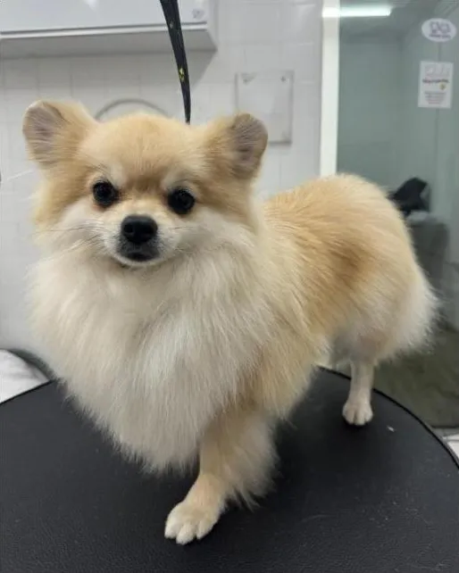
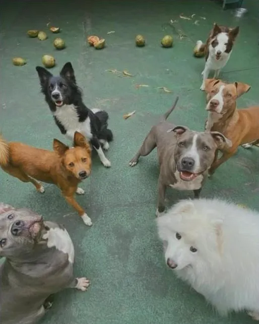
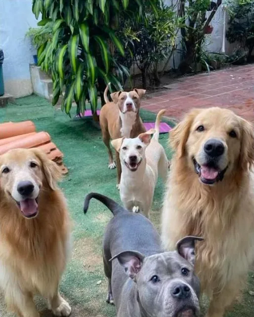
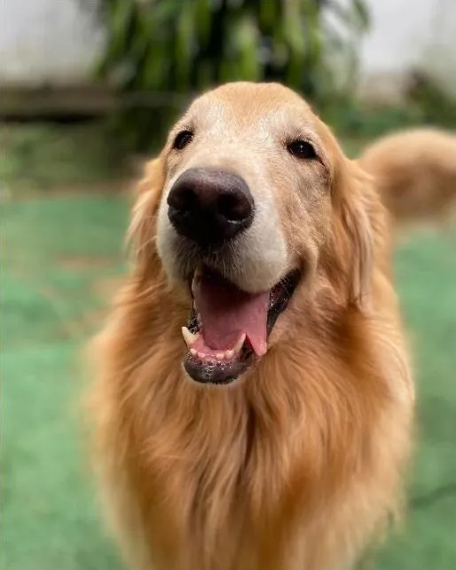
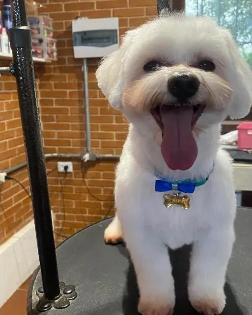
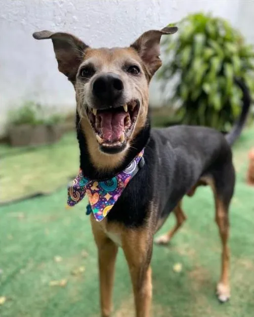
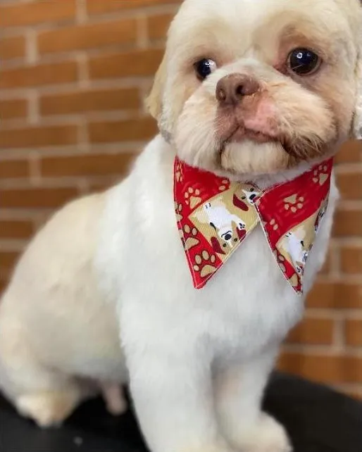

Seu pet cheiroso, feliz e muito bem cuidado.
Banho e tosa, day care, hospedagem, pet sitter, dog walker, clínica veterinária e adestramento — tudo com carinho, num espaço novo, maior e mais acolhedor.



Tudo o que seu pet precisa, num só lugar
Do banho caprichado ao dia inteiro de brincadeira: cuidamos do seu melhor amigo como se fosse nosso.

- Agendar banho →
Banho e Tosa
Espaço moderno e confortável, produtos de qualidade e aquele acabamento com gravatinha que todo mundo ama.
- Conhecer o day care →
Day Care / Creche
Seu cão passa o dia gastando energia, socializando e se divertindo com a turma enquanto você trabalha.
- Reservar hospedagem →
Hospedagem
Vai viajar? Seu pet fica num ambiente seguro e acolhedor, cheio de carinho e diversão até você voltar.
- Pedir orçamento →
Pet Sitter e Dog Walker
Passeios e visitas com profissionais de confiança, para manter a rotina e a alegria do seu pet.
- Agendar consulta →
Clínica Veterinária
Cuidado com a saúde do seu pet: consultas, vacinas e prevenção contra pulgas e carrapatos.
- Saber mais →
Adestramento
Mais convivência e menos bagunça: ensinamos bons hábitos com paciência e reforço positivo.


Aqui, diversão é coisa séria!
Mudamos para um espaço ainda maior e mais acolhedor na Vila Sônia, com área verde para a turma correr, brincar e tomar aquele solzinho.
- Área externa com gramado para brincar à vontade
- Socialização com outros pets, sempre com supervisão
- Banho e tosa no mesmo lugar: seu pet volta pra casa cansado e cheiroso
Agendar é simples assim
Nossa equipe trata cada pet com paciência e muito carinho, do primeiro contato até a volta pra casa.
Chamar no WhatsApp- 1
Chame no WhatsApp
Conte sobre seu pet e escolha o serviço.
- 2
Escolha o melhor horário
Encaixamos na agenda que funciona pra você.
- 3
Seu pet é bem cuidado
E volta pra casa feliz, limpinho e cheio de estilo.
Nossos clientes mais fofos
Um pouquinho do dia a dia no Naiko. Tem muito mais no nosso Instagram!



Bora deixar seu pet ainda mais feliz?
Chama a gente no WhatsApp e garanta o horário do seu melhor amigo.
(11) 96284-1447